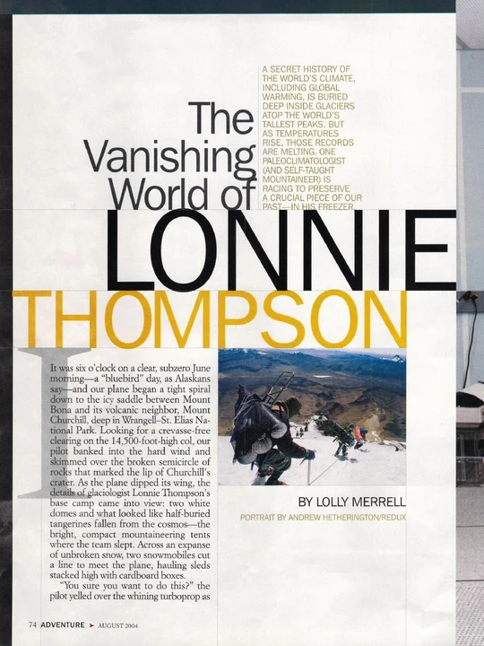
National Geographic Adventure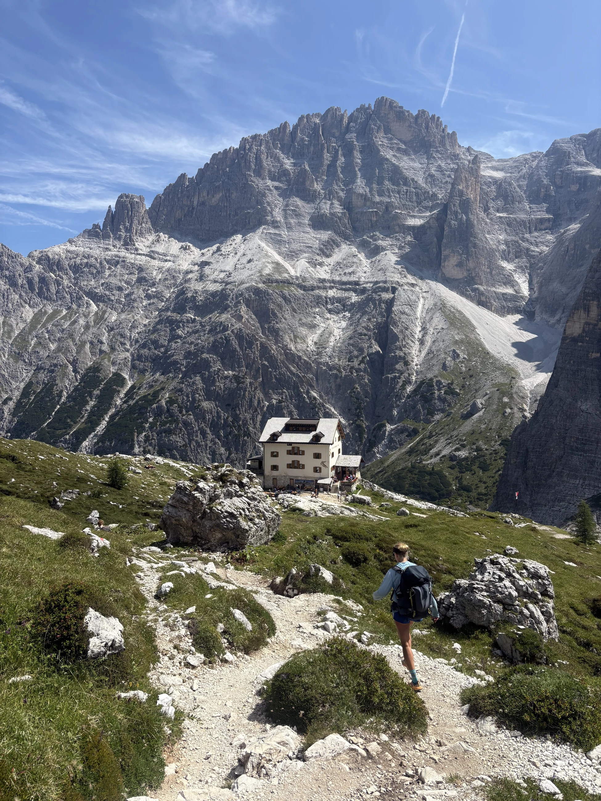
Lolly Merrell is a writer, journalist and editor specializing in immersive reporting, narrative storytelling, science and environmental journalism, profiles, and travel writing.
After earning her master’s degree from Northwestern University’s Medill School of Journalism, Merrell worked on staff at several publications, including Outside, Snow Country, and High Country News. Her reporting assignments have taken her to Rajasthani tiger country, underground caves in Belize, 16,000-ft-high glaciologists’ camp in Alaska, and the Rustic Roads of Wisconsin.
Contact LollyFeatured Work

National Geographic Adventure
The Vanishing World of Lonnie Thompson
A journey to glaciologist Lonnie Thompson’s high-altitude Alaska camp, where a team is racing to preserve the climate history locked inside the world’s disappearing glaciers.
Read MoreProfiles
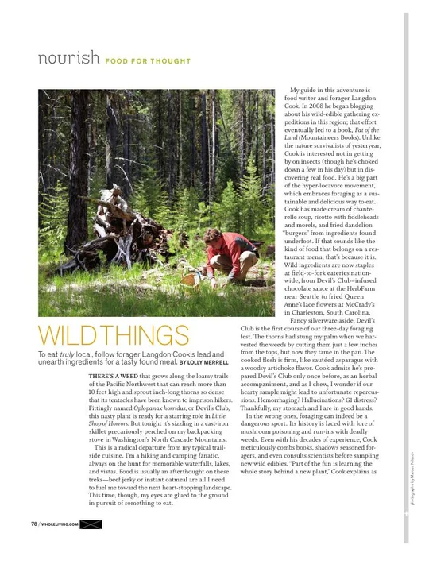
Whole LivingWild Things
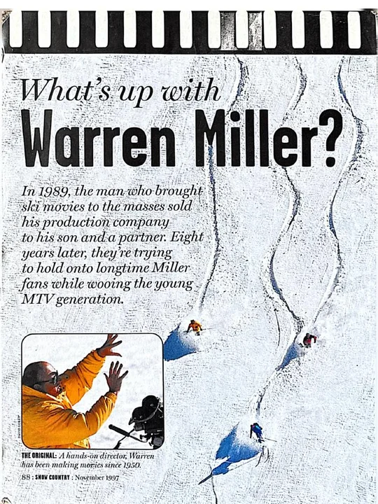
Snow CountryWhat’s Up with Warren Miller?
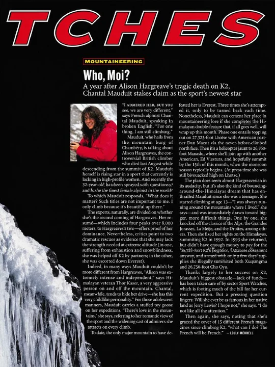
OutsideWho, Moi?
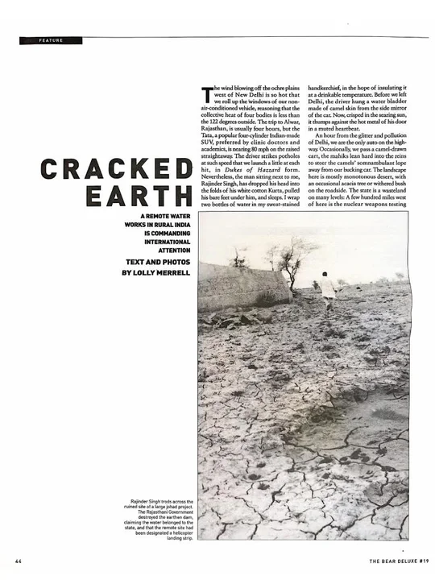
The Bear DeluxeCracked Earth
Travel and Adventure
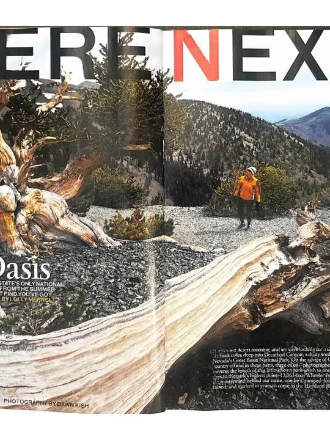
National Geographic AdventureNevada’s Alpine Oasis
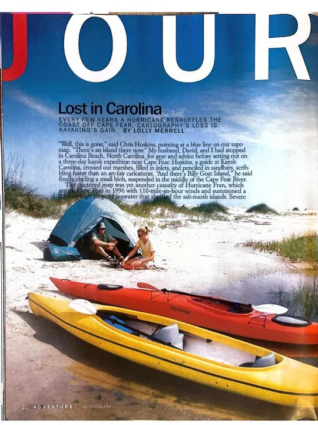
National Geographic AdventureLost in Carolina
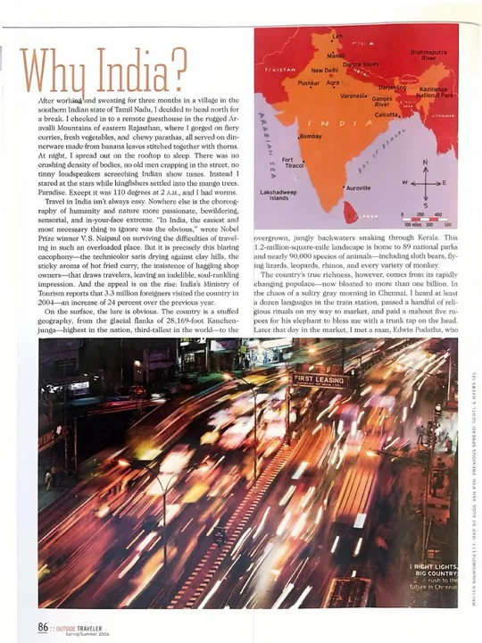
Outside TravelerWhy India?
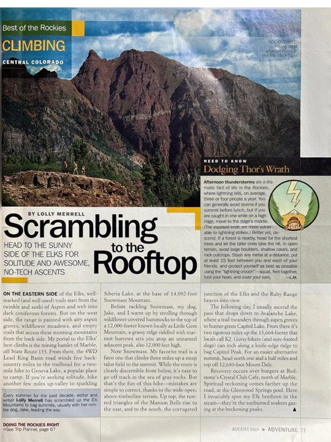
National Geographic AdventureScrambling to the Rooftop
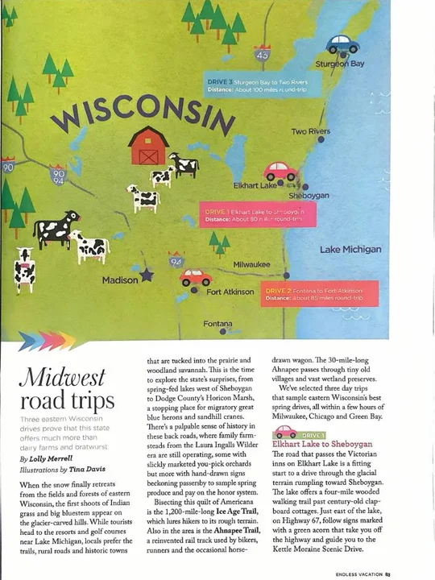
Endless VacationMidwest Road Trips
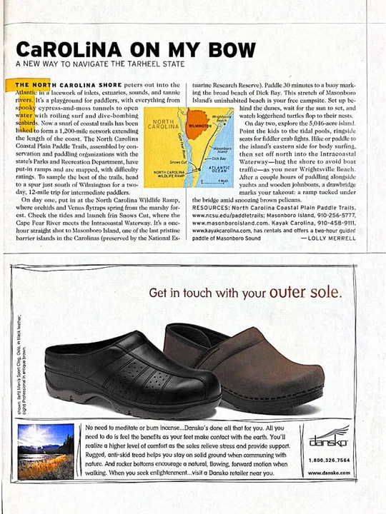
OutsideCarolina on My Bow
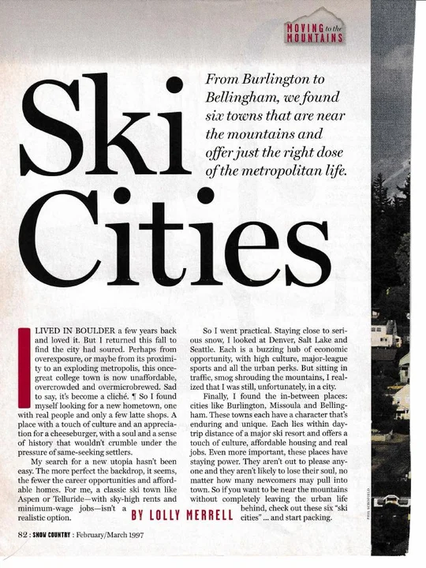
Snow CountrySki Cities
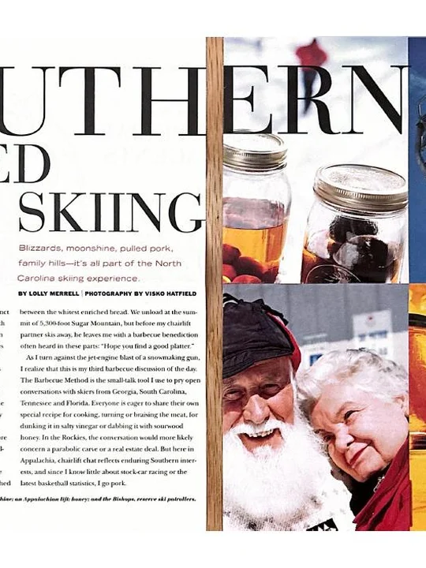
Mountain Sports & LivingSouthern Fried Skiing
Science, Environment and Culture
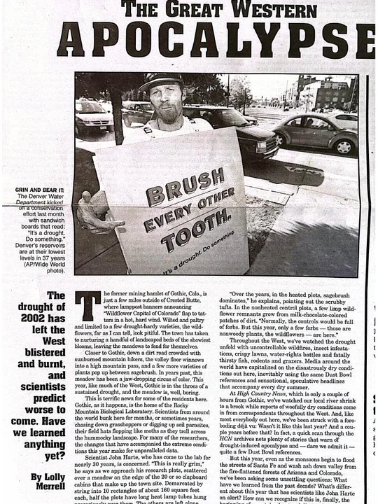
High Country NewsThe Great Western Apocalypse
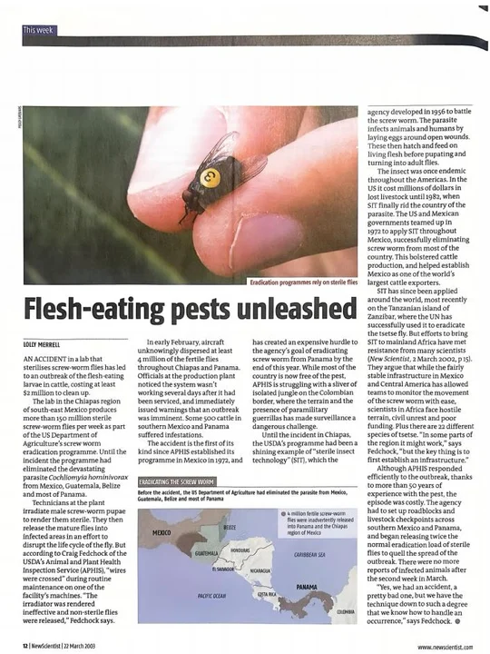
New ScientistFlesh-Eating Pests Unleashed
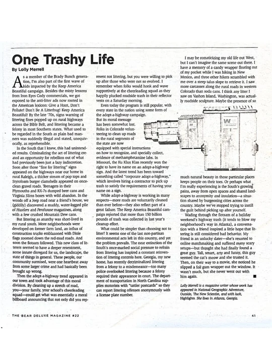
The Bear DeluxeOne Trashy Life
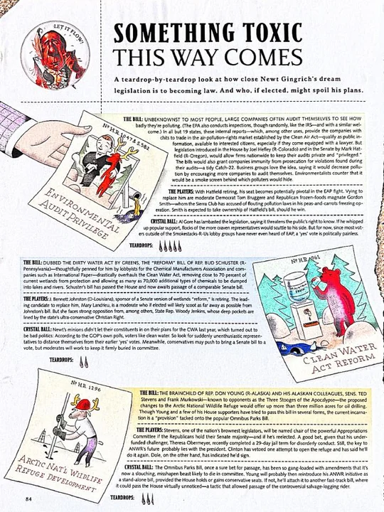
OutsideSomething Toxic This Way Comes
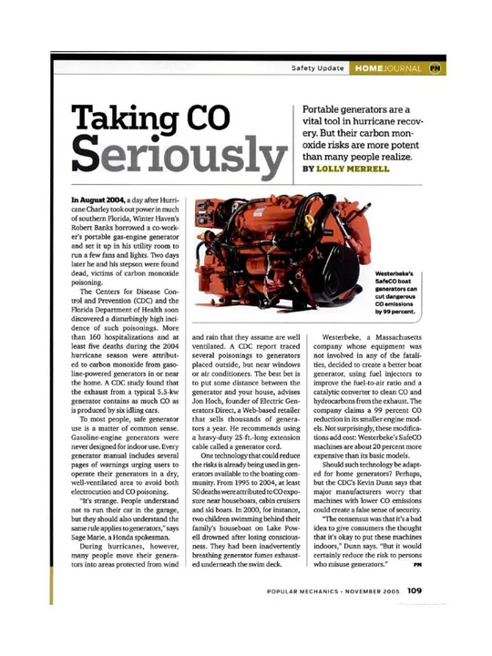
Popular MechanicsTaking CO Seriously
Contact
Get in touch with Lolly at lollymerrell@yahoo.com.
Contact Lolly